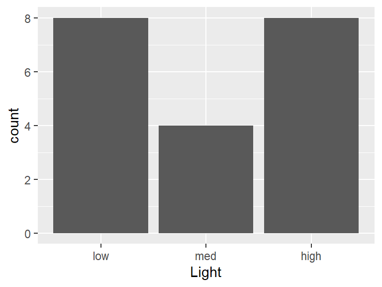

Codebook for survdf
Autogenerated data summary from dataMaid
Data report overview
The dataset examined has the following dimensions:
| Feature | Result |
|---|---|
| Number of observations | 20 |
| Number of variables | 3 |
Codebook summary table
| Label | Variable | Class | # unique values | Missing | Description |
|---|---|---|---|---|---|
| low dosage (4.5 micromols per square meter per second), medium dosage (6.75 micromols per square meter per second), high dosage (9 micromols per square meter per second) | Light | factor | 3 | 0.00 % | |
| low dosage (2 NTUs), medium dosage (5.5 NTUs), high dosage (9 NTUs) | Turbidity | factor | 3 | 0.00 % | |
| Percentage of early-stage Delta smelt larvae (0-40 days post hatch) that survived | Survival | numeric | 20 | 0.00 % |
Variable list
Light
low dosage (4.5 micromols per square meter per second), medium dosage (6.75 micromols per square meter per second), high dosage (9 micromols per square meter per second)
| Feature | Result |
|---|---|
| Variable type | factor |
| Number of missing obs. | 0 (0 %) |
| Number of unique values | 3 |
| Mode | “low” |
| Reference category | low |
- Observed factor levels: "high", "low", "med".
Turbidity
low dosage (2 NTUs), medium dosage (5.5 NTUs), high dosage (9 NTUs)
| Feature | Result |
|---|---|
| Variable type | factor |
| Number of missing obs. | 0 (0 %) |
| Number of unique values | 3 |
| Mode | “low” |
| Reference category | low |
- Observed factor levels: "high", "low", "med".
Survival
Percentage of early-stage Delta smelt larvae (0-40 days post hatch) that survived
| Feature | Result |
|---|---|
| Variable type | numeric |
| Number of missing obs. | 0 (0 %) |
| Number of unique values | 20 |
| Median | 59.56 |
| 1st and 3rd quartiles | 55.79; 67.24 |
| Min. and max. | 45.02; 89.09 |
Report generation information:
Created by: emontoya2 (username:
monto).Report creation time: Fri Jun 10 2022 19:37:03
Report was run from directory:
C:/Users/monto/Desktop/gprojects/tmsm/tmsmdataMaid v1.4.1 [Pkg: 2021-10-08 from CRAN (R 4.1.3)]
R version 4.1.2 (2021-11-01).
Platform: x86_64-w64-mingw32/x64 (64-bit)(Windows 10 x64 (build 22000)).
Function call:
dataMaid::makeDataReport(data = survdf, mode = c("summarize", "visualize", "check"), smartNum = FALSE, file = "codebook_survdf.Rmd", checks = list(character = "showAllFactorLevels", factor = "showAllFactorLevels", labelled = "showAllFactorLevels", haven_labelled = "showAllFactorLevels", numeric = NULL, integer = NULL, logical = NULL, Date = NULL), listChecks = FALSE, maxProbVals = Inf, codebook = TRUE, reportTitle = "Codebook for survdf")